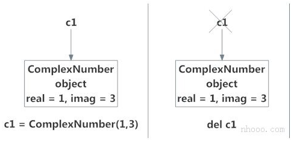
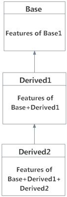

Python 面向对象编程¶
在本文中，您将通过示例了解Python中的面向对象编程(OOP)及其基本概念。
Python OOP简介¶
Python是一种多范式编程语言。意思是说，它支持不同的编程方法。
解决编程问题的一种流行方法是创建对象。也就是所谓的面向对象编程（OOP）。
一个对象具有两个特征：
- 属性
- 行为
让我们举个示例：
鹦鹉是一个物体，
- 名称，年龄，颜色是属性
- 唱歌，跳舞都是行为
Python中的OOP概念专注于创建可重用的代码。此概念也称为DRY（Don't Repeat Yourself）不要重复自己。
在Python中，OOP的概念遵循一些基本原则：
| 继承 | 使用新类的详细信息而不修改现有类的过程。 |
|---|---|
| 封装 | 对其他对象隐藏类的私有细节。 |
| 多态 | 对不同的数据输入以不同的方式使用通用操作的概念。 |
类（class）¶
类是对象的蓝图。
我们可以将类看作是带有标签的鹦鹉的素描。它包含有关名称，颜色，大小等的所有详细信息。基于这些描述，我们可以研究鹦鹉。在这里，鹦鹉是一个对象。
鹦鹉类的示例可以是：
在这里，我们使用class关键字来定义一个空类Parrot。我们从类中构造示例。示例是由特定类创建的特定对象。
对象（Object）¶
对象（示例）是类的示例。定义类时，仅定义对象的描述。因此，没有分配内存或存储。
鹦鹉类对象的示例可以是：
obj = Parrot()
在这里，obj是Parrot类的对象。
假设我们有鹦鹉的详细信息。下面，我们将展示如何构建鹦鹉的类和对象。
示例1：在Python中创建类和对象¶
示例
当我们运行程序时，输出将是：
在上面的程序中，我们创建一个名为Parrot的类。然后，我们定义属性。属性是对象的特征。
然后，我们创建Parrot类的示例。在这里，blu和woo是我们新对象的引用（值）。
然后，我们使用class .species访问class属性。类的所有示例的类属性都是相同的。类似地，我们使用blu.name和blu.age访问示例属性。但是，对于类的每个示例，示例属性都是不同的。
要了解有关类和对象的更多信息，请转到Python类和对象。
方法¶
方法是在类主体内定义的函数。它们用于定义对象的行为。
示例2：在Python中创建方法¶
示例
当我们运行程序时，输出将是：
在上面的程序中，我们定义了两种方法，即sing()和dance()。 这些之所以称为示例方法，是因为它们是在示例对象（即blu）上调用的。
继承性¶
继承是一种创建新类的方法，用于在不修改现有类的细节的情况下使用它。新形成的类是一个派生类(或子类)。类似地，现有类是基类(或父类)。
示例3：在Python中使用继承¶
示例
当我们运行该程序时，输出将是：
在上面的程序中，我们创建了两个类，即Bird（父类）和Penguin（子类）。子类继承父类的功能。我们可以从swim()方法中看到这一点。子类再次修改了父类的行为。我们可以从whoisThis()方法中看到这一点。此外，我们通过创建新run()方法来扩展父类的功能。
另外，我们在init()方法之前使用super()函数。这是因为我们希望将init()方法的内容从父类拉到子类中。
可封装性¶
在Python中使用OOP，我们可以限制对方法和变量的访问。这样可以防止数据直接修改（称为封装）。在Python中，我们使用下划线作为前缀来表示私有属性，即单“ _”或双“ __”。
示例4：Python中的数据封装¶
示例
| Python | |
|---|---|
当我们运行该程序时，输出将是：
在上面的程序中，我们定义了Computer类。我们使用__init__()方法存储计算机的最高售价。我们试图修改价格。但是，我们无法更改它，因为Python将__maxprice视为私有属性。要更改该值，我们使用了setter函数，即setMaxPrice()，它以price为参数。
多态性¶
多态性是一种功能（在OOP中），可以将公共接口用于多种形式（数据类型）。
假设我们需要给一个形状上色，有多个形状选项（矩形，正方形，圆形）。但是，我们可以使用相同的方法为任何形状着色。这个概念称为多态。
示例5：在Python中使用多态¶
示例
| Python | |
|---|---|
当我们运行上面的程序时，输出将是：
在上面的程序中，我们定义了两个类Parrot和Penguin。它们每个都有通用的fly()方法。但是，它们的功能不同。为了允许多态，我们创建了通用接口，即flying_test()可以接受任何对象的函数。然后，我们在flying_test()函数中传递了blu和peggy对象，它有效地运行了。
面向对象编程的要点：¶
- 让编程变得简单而有效。
- 类是可共享的，因此可以重复使用代码。
- 让编程人员的生产力提高
- 通过数据抽象，数据是安全的。
Python 类和对象¶
在本文中，您将学习Python的核心功能，Python对象和类。 您将学习什么是类，如何创建它并在程序中使用它。
Python中的类和对象是什么？¶
Python是一种面向对象的编程语言。与面向过程的程序设计主要侧重于函数，面向对象的程序设计着重于对象。
对象只是数据（变量）和作用于这些数据的方法（函数）的集合。并且，类是对象的蓝图。
我们可以将类视为房子的草图（原型）。它包含有关地板，门，窗户等的所有详细信息。基于这些描述，我们建造了房屋。房子是对象。
由于可以通过描述来制作许多房屋，因此我们可以根据类创建许多对象。对象也称为类的示例，创建该对象的过程称为示例化。
在Python中定义一个类¶
就像函数定义以关键字def开头一样，在Python中，我们使用关键字class定义了一个类。
第一个字符串称为docstring，并具有有关该类的简短说明。尽管不是强制性的，但是建议这样做。
这是一个简单的类定义。
一个类创建一个新的本地命名空间，并在其中定义其所有属性。属性可以是数据或函数。
其中还有一些特殊属性，它们以双下划线(__)开头。例如，__doc__给我们该类的文档字符串。
一旦定义了一个类，就会创建一个具有相同名称的新类对象。这个类对象使我们可以访问不同的属性以及示例化该类的新对象。
示例
| Python | |
|---|---|
运行该程序时，输出为：
用Python创建对象¶
我们看到了类对象可用于访问不同的属性。
它也可以用于创建该类的新对象示例（示例化）。创建对象的过程类似于函数调用。
ob = MyClass()
这将创建一个新的示例对象ob。我们可以使用对象名称前缀来访问对象的属性。
属性可以是数据或方法。对象的方法是该类的相应函数。任何作为类属性的函数对象都为该类的对象定义了一种方法。
这意味着，由于MyClass.func是函数对象（类的属性），因此ob.func将成为方法对象。
示例
您可能已经注意到了类内部函数定义中的self参数，但是，我们只是将该方法简称为ob.func()，没有任何参数。它仍然有效。
这是因为，只要对象调用其方法，该对象本身就会作为第一个参数传递。因此，ob.func()自动转成MyClass.func(ob)。
通常，调用带有n个参数列表的方法等效于调用带有参数列表的函数，该参数列表是通过在第一个参数之前插入方法的对象而创建的。
由于这些原因，类中函数的第一个参数必须是对象本身。这通常称为self。可以使用其他名称，但我们强烈建议您遵循约定。
现在，您必须熟悉类对象，示例对象，函数对象，方法对象及其区别。
Python中的构造函数¶
以双下划线(__)开头的类函数被称为特殊函数，因为它们具有特殊含义。
init()函数特别有用。每当示例化该类的新对象时，都会调用此特殊函数。
这种类型的函数在面向对象编程(OOP)中也称为构造函数。我们通常使用它来初始化所有变量。
示例
在上面的示例中，我们定义了一个新类来表示复数。它具有两个函数，以 init() 初始化变量（默认为零），getData()用来正确显示数字。
在上述步骤中需要注意的一件有趣的事情是，可以动态地创建对象的属性。我们为对象c2创建了一个新的属性attr，并读取它。但这并没有为对象c1创建该属性。
删除属性和对象¶
可以使用del语句随时删除对象的任何属性。在Python Shell上尝试以下操作以查看输出。
我们甚至可以使用del语句删除对象本身。
| Python | |
|---|---|
实际上，它比这更复杂。完成后，将在内存中创建一个新的示例对象 c1 = ComplexNumber(1,3)，名称c1与 其绑定。
命令del c1，将删除此绑定，并从相应的名称空间中删除名称c1。但是，该对象继续存在于内存中，如果没有其他名称绑定，则该对象以后会自动销毁。
在Python中这种对未引用对象的自动销毁也称为垃圾回收。

Python 继承¶
继承使我们能够定义一个继承父类所有功能的类，并允许我们添加更多功能。 在本文中，您将学习在Python中使用继承。
什么是继承？¶
继承是面向对象编程中的一项强大功能。
它指的是定义一个新类，而对现有类的进行很少修改或没有修改。新类称为派生（或子）类，而从其继承的新类称为基（或父）类。
Python继承语法¶
派生类从基类继承要素，并向其添加新要素。这可以提高代码的可重用性。
Python中的继承示例¶
为了演示继承的使用，让我们举一个示例。
多边形是具有3个或更多边的闭合图形。说，我们有一个名为的类，Polygon定义如下。
| Python | |
|---|---|
此类具有数据属性，用于存储边数，边数和每边的大小作为列表，即边数。
方法inputSides()取每一侧的大小，类似地，dispSides()将它们正确显示。
三角形是具有3个边的多边形。因此，我们可以创建一个名为的类，该类Triangle继承自Polygon。这使得类中所有可用的属性都可以在中Polygon轻松使用Triangle。我们不需要再次定义它们（代码可重用性）。Triangle定义如下。
| Python | |
|---|---|
但是，class Triangle具有一种新方法findArea()来查找和打印三角形的区域。这是一个示例运行。
| Python | |
|---|---|
我们可以看到，尽管我们没有为类Triangle定义inputSides()或sides()之类的方法，但是我们能够使用它们。
如果在类中找不到属性，则搜索继续到基类。如果基类本身是从其他类派生的，则将以递归方式重复此操作。
Python中的方法重写¶
在上面的示例中，请注意，在Triangle和Polygon这两个类中都定义了__init ()方法。 发生这种情况时，派生类中的方法将覆盖基类中的方法。 也就是说，Triangle中的__init ()优先于Polygon中的__init __()。
通常，当覆盖基本方法时，我们倾向于扩展定义而不是简单地替换它。 通过从派生类中的基类中调用基类中的方法（从Triangle中的__init ()中调用Polygon . init __()）来完成相同的操作。
更好的选择是使用内置函数super()。因此，super().init(3)等效于Polygon.init(self,3)并且是首选。您可以了解有关Python中的super()函数的更多信息。
两个内置函数isinstance()，issubclass()用于检查继承。如果对象是该类或从其派生的其他类的示例，则函数isinstance()返回True。Python中的每个类都继承自基类object。
| Python | |
|---|---|
同样，issubclass()用于检查类的继承。
| Python | |
|---|---|
Python 多重继承¶
在本文中，您将学习什么是Python中的多重继承以及如何在程序中使用它。 您还将了解多级继承和方法解析顺序。
Python中的多重继承¶
像C ++一样，一个类可以从Python中的多个基类派生。这称为多重继承。
在多重继承中，所有基类的功能都继承到派生类中。多重继承的语法类似于单一继承。
例¶
在这里，MultiDerived源自类Base1和Base2。
MultiDerived类从Base1和Base2继承。
Python中的多级继承¶
另一方面，我们也可以继承派生类。这称为多级继承。在Python中可以是任何深度。
在多级继承中，基类和派生类的功能被继承到新的派生类中。
下面给出了具有相应可视化效果的示例。
在此，Derived1从Base派生，Derived2从Derived1派生。

Python中的方法解析顺序¶
Python中的每个类都派生自该类object。它是Python中最基本的类型。
因此，从技术上讲，所有其他类（内置的或用户定义的）都是派生类，而所有对象都是object类的示例。
示例
| Python | |
|---|---|
在多继承方案中，将在当前类中首先搜索任何指定的属性。如果未找到，则搜索将以深度优先，从左到右的方式继续进入父类，而无需两次搜索相同的类。
所以，在上面的实例中MultiDerived类中的搜索顺序是[ MultiDerived，Base1，Base2，object]。该顺序也称为MultiDerived类的线性化，用于查找该顺序的规则集称为“ 方法解析顺序（MRO）”。
MRO必须防止本地优先级排序，并且还必须提供单调性。它可以确保一个类始终出现在其父级之前，如果有多个父级，则其顺序与基类的元组相同。
可以将类的MRO视为__mro__属性或mro()方法。前者返回一个元组，而后者返回一个列表。
| Python | |
|---|---|
这是一个稍微复杂的多重继承示例及其可视化以及MRO。
多重继承可视化
示例
| Python | |
|---|---|
请参考此内容，以进一步讨论MRO，并了解实际算法的计算方式。
Python 运算符重载¶
您可以根据所使用的操作数来更改Python中运算符的含义。 这种做法称为运算符过载。
什么是Python中的运算符重载？¶
Python运算符用于内置类。但是相同的运算符对不同的类型有不同的行为。例如，+运算符将对两个数字执行算术加法、合并两个列表并连接两个字符串。
Python中的这一功能允许同一运算符根据上下文具有不同的含义，称为运算符重载。
那么，当我们将它们与用户定义类的对象一起使用时会发生什么呢？让我们看下面的类，它试图在二维坐标系中模拟一个点。
示例
现在，运行代码并尝试在Python shell中添加两个点。
| Python | |
|---|---|
哇！这是很多错误。由于Python不知道如何将两个Point对象加在一起而引发TypeError。
但是，好消息是我们可以通过运算符重载向Python教授这一点。但是首先，让我们对特殊函数有所了解。
Python中的特殊函数¶
以双下划线__开头的类函数在Python中称为特殊函数。这是因为，它们不是普通的函数。我们上面定义的__init__()函数就是其中之一。每次我们创建该类的新对象时都会调用它。Python中有很多特殊函数。
使用特殊函数，我们可以使我们的类与内置函数兼容。
示例
打印输出没有达到预想的效果。但是，如果我们在类中定义__str__()方法，我们可以控制它的打印输出方式。我们把这个加到我们的类中。
示例
| Python | |
|---|---|
现在，让我们print()再次尝试该函数。
事实证明这样更好，当我们使用内置函数str()或时，将调用相同的方法format()。
因此，当您执行str(p1)或format(p1)时，Python在内部执行p1.str()。因此得名，特殊函数。下面继续回到操作符重载。
在Python中重载+运算符¶
要重载+符号，我们将需要在类中实现__add__()函数。拥有权利的同时也被赋予了重大的责任。我们可以在此函数内做任何喜欢的事情。 但是返回坐标和的Point对象是明智的。
示例
| Python | |
|---|---|
现在，让我们再试一次。
实际上发生的是，当您执行p1 + p2时，Python会调用p1 . add (p2)，也就是Point . add (p1，p2)。 同样，我们也可以重载其他运算符。 我们需要实现的特殊函数列表如下。
| 运算符 | 表达 | 在内部 |
|---|---|---|
| 相加（+） | p1 + p2 | p1 . add （p2） |
| 相减（-） | p1-p2 | p1 . sub （p2） |
| 相乘（*） | p1 * p2 | p1 . mul （p2） |
| 求幂（**） | p1 ** p2 | p1 . pow （p2） |
| 相除（/） | p1 / p2 | p1 . truediv （p2） |
| 整除（//） | p1 // p2 | p1 . floordiv （p2） |
| 求模 （%） | p1％p2 | p1 . mod （p2） |
| 按位左移（<<） | p1 << p2 | p1 . lshift （p2） |
| 按位右移（>>） | p1 >> p2 | p1 . rshift （p2） |
| 按位与（and） | p1 and p2 | p1 . and （p2） |
| 按位或（or） | p1 | 2 |
| 按位异或（^） | p1 ^ p2 | p1 . xor （p2） |
| 按位否（~） | 〜p1 | p1 . invert () |
在Python中重载比较运算符¶
Python不限制运算符重载为算术运算符。我们也可以重载比较运算符。
假设，我们想在Point类中实现小于运算符（<） ，让我们从原点比较这些点的大小，并为此目的返回结果。可以如下实现。
示例
| Python | |
|---|---|
尝试在Python shell中运行这些示例。
| Python | |
|---|---|
类似地，下面列出了我们需要实现以重载其他比较运算符的特殊函数。
| 操作符 | 表达式 | 内部 |
|---|---|---|
| 小于（<） | p1 <p2 | p1 . lt （p2） |
| 小于等于（<=） | p1 <= p2 | p1 . le （p2） |
| 等于（==） | p1 == p2 | p1 . eq （p2） |
| 不等于（!=） | p1！= p2 | p1 . ne （p2） |
| 大于（>） | p1> p2 | p1 . gt （p2） |
| 大于等于（>=） | p1> = p2 | p1 . ge （p2） |